smart-servlet
smart-servlet 是一款实现了Servlet 3.1规范，支持多应用隔离部署的的 Web 容器。除此之外，smart-servlet 还是一款插件化容器，基于内置的沙箱环境确保 smart-servlet 拥有最精简的运行能力，用户还可以通过自定义插件扩展容器的服务能力。

架构设计
smart-servlet 在 smart-http 的架构之上，通过继承 HttpHandle 实现了 Servlet 规范。这意味着任何 smart-http 服务都可以通过单独引入 smart-servlet 核心包的方式，将普通的 http 应用改造成 servlet 应用，而且这个成本是极低的。

产品特色
- 零学习成本，素未谋面，却已相知。保留用户原有的 Tomcat、Undertow 使用习惯。
- 朴实无华，用最初级的设计手法打造专业级服务器。
- 实现 Servlet 核心规范：request、response、session、cookie、dispatcher、servletContext。
- 插件化设计，自由 DIY 服务器。
- 延续一贯的极简、易用、高性能设计风格。
- 开箱即用，运行程序包、maven本地开发/调试插件、springboot starter 一应俱全，满足你的开发、部署需求。
有所不为
有些规范我们默认不会提供实现方案，毕竟时代不一样了。 很多东西在当下已经过时或有了更好的替代方案，我们认为是时候跟过去告别了。
- JNDI
- Security Role
- JSP
工程模块
- smart-servlet 【工程主目录】
- servlet-core【servlet规范实现核心包】
- plugins【容器可扩展插件】
- dispatcher【RequestDispatcher插件，必选】
- session【HttpSession插件，可选】
- smart-servlet-maven-plugin【业务系统通过pom.xml集成本地开发环境】
- spring-boot-start【springboot业务系统通过pom.xml集成本地开发环境】
- archives【用于部署War包的可执行环境软件包，开箱即用】
特别说明
本项目还处于研发阶段，还未完成所有 Servlet 标准的兑现。如若在使用过程中发现问题可提 Issues 反馈，我们会尽快安排处理，感谢您的理解和支持！
QQ交流社群：1167545865（付费制），入群福利：
- 前20名免费入群。
- 掌握 smart-servlet 的第一手资讯。
- 深入探讨 Servlet 规范及服务器开发经验。
- 与同类开发人群成为朋友。